Singapore is a small country, but it still holds a substantially high CO2 Emissions Per Capita:
9.45 tonnes
Singapore has the 27th highest CO2 Emissions Per Capita based on the latest International Energy Agency (IEA) data.
Below is a graph of Singapore's CO2 Emissions over the last 21 years.
Close, but the last time Singapore was at 185 million tonnes was in 2010.
Hmm, not quite. Singapore produced 127 million tonnes in 2005.
That's right! Singapore produced 211,000,000 tonnes of CO2 from fossil fuels in 2020! That's about 30 million elephants, or 7 million Statue of Liberties, or 33 thousand Marina Bay Sands, or...
You get the idea.
It's a lot.
Over the last 50 years, Singapore's CO2 emissions grew substantially from 21 to 211 million tonnes.
As of 2020, Singapore contributes 0.13% of global emissions. Although this is quite small, the Singapore Government is still taking steps to reduce carbon emissions. A large percentage of its emissions is from the industry and power sector (Click the pie chart to see how much!).
One reason for this is because of Singapore's location along prominent East-West trade routes.
Progress requires sacrifice. If we want a greener future, we will need to change the way Singapore, and any other country, operates. One obvious step would be to lower the emissions from the country's industry sector. However, not everyone has the power to do this, and Singapore's economy relies heavily on these facilities.
A more realistic solution would be to do what we can, then campaign for change in the larger sectors. In order to achieve this, we need to learn one of the most widely-used terms when combatting carbon emissions: Carbon Footprint.
A Carbon Footprint is the total amount of greenhouse gases (such as carbon dioxide and methane) that are generated by our actions.
The term was popularized by a $250 million advertising campaign by the oil and gas company BP in an attempt to move public attention away from restricting fossil fuel companies and onto individual responsibility for solving climate change. Nowadays, the term can be found everywhere.
In 2004 BP created a "carbon footprint calculator", which you could use to calculate how your daily life is largely responsible for climate change. These calculators are now used by several organizations. Even the U.S. Environmental Protection Agency has one. This campaign has misguided millions into thinking that climate change is a personal problem, when in reality companies, such as BP, are largely responsible for the problem.
There is no shame in trying to reduce your carbon footprint. However, we must not ignore the effects that oil and gas companies have on the environment. Switching off an unused light is simply not enough to counter BP's 1.99 million barrels of oil produced per day (2020).
However, we must remember that our personal choices DO have an impact on the environment, and if we work together, we can help lower our country's environmental impact.
Taking public transport is one of the most efficient ways to lower your carbon footprint. If you can, try taking public transportation such as buses or the MRT. If your destination is close enough, consider walking or riding a bike. These choices lower your emissions, while also keeping you active.
One of the most obvious ways to help is by recycling. Recycling reduces the need for extracting, refining and processing raw materials, which all create substantial air and water pollution. Recycling also saves energy and greenhouse gas emissions. The more you recycle, the less amount of rubbish is sent to be incinerated.
Research has shown that reducing meat intake and swapping meat for fruits and vegetables is one of the best ways to reduce your carbon footprint. Emissions from livestock, like beef and dairy cattle, represent 14.5% of the globe's human-induced greenhouse gas emissions.
If you are interested in finding out how much CO2 you emit every year, below is a very basic example of a Carbon Calculator. Just choose whichever description best fits you, then click the "Calculate" button at the end.
Note: This is a VERY basic calculator. However, it will give you a sense of where you are in terms of CO2 emissions.